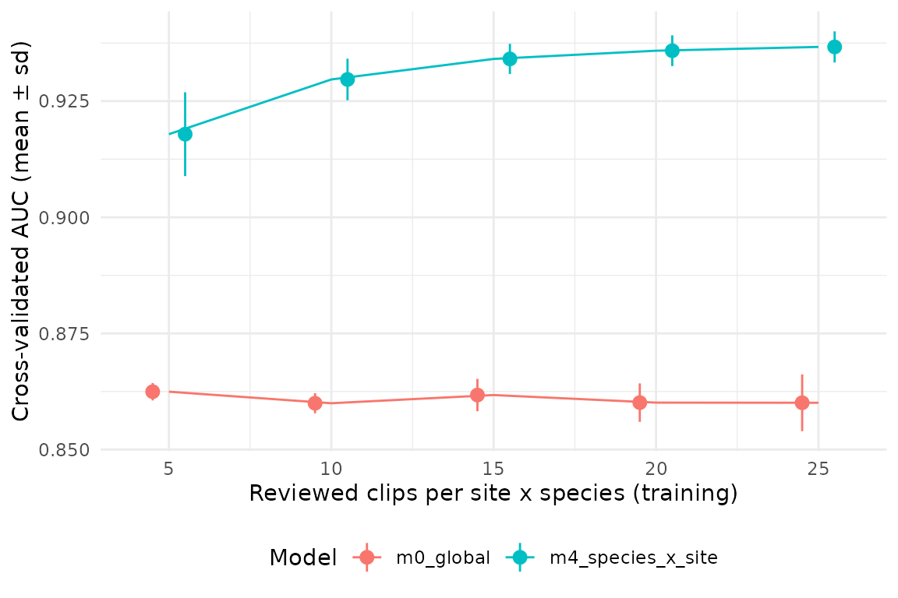

Manual review is the most expensive step of the workflow, so the number of clips to validate per site x species is a design decision. sheepdog offers two complementary views of it:
-
Stage 2,
calibration_effort(). The cross-validated AUC of a calibration model as a function of the number of reviewed clips per site x species cell. It answers whether, pooled over all cells, more clips would still improve the calibration. -
Stage 1,
precision_by_bin()andsuggest_thresholds(). Precision by confidence bin and the lowest threshold that reaches a target precision, for each site x species, with flags for bins and thresholds resting on few clips. They show which cells lack support, and, withcovariate_bins(), which parts of an environmental gradient or of the acoustic background.
This vignette runs both on the simulated example shipped with the package.
Example data
The example holds BirdNET predictions simulated for frog species at
several sites over six months (data-raw/make_example_data.R
in the source repository). False-positive confidences overlap those of
true detections, and false-positive rates differ among species and
sites. The reviewed clips were drawn with the "top" design
(the two highest confidences per site x species x night x hour, up to 80
clips per site x species) and their verdicts come from the simulated
truth. Species with few detections at a site yield fewer than 80 clips
there.
library(sheepdog)
library(dplyr, warn.conflicts = FALSE)
ex <- system.file("extdata", "example", package = "sheepdog")
val_files <- list.files(file.path(ex, "validation"), full.names = TRUE)
basename(val_files)
#> [1] "validation_by_clip_ARA.csv" "validation_by_clip_BAI.csv"
#> [3] "validation_by_clip_NHE.csv" "validation_by_clip_XAR.csv"read_validations() stacks the tables and keeps the clips
with a verdict and a confidence score, in the form used by the
calibration models:
val <- read_validations(val_files)
#> 2467 reviewed clips (1577 TP / 890 FP) of 8 species at 4 sites.
val |>
summarise(precision = round(mean(tp), 2), .by = c(site, species)) |>
tidyr::pivot_wider(names_from = species, values_from = precision)
#> # A tibble: 4 × 9
#> site boa_ran den_nan ela_bic lep_fus lep_pod phy_cuv pse_pla sci_nas
#> <fct> <dbl> <dbl> <dbl> <dbl> <dbl> <dbl> <dbl> <dbl>
#> 1 ARA 0.98 0.82 0.91 0 0.91 0.98 0.61 0.81
#> 2 BAI 0.78 0.35 0.94 0 0.79 0.96 0.21 0.42
#> 3 NHE 0.44 0.51 0.8 0.62 0.76 0.89 0.3 0.24
#> 4 XAR 0.71 0.3 0.92 0.6 0.94 0.78 0.12 0.51The table gives the share of true positives among the reviewed clips of each cell (8 species x 4 sites = 32 cells of 33 to 80 clips). It already shows that the same design yields very different precision across species and sites.
Stage 2: the effort curve
How the curve is built
For each training size n in n_train,
calibration_effort() draws n clips from every site
x species cell (keeping at least five per cell for testing), fits the
model to the drawn clips and computes the AUC on all the remaining
clips. This is repeated n_reps times per n;
repetitions whose fit fails, or with fewer than 50 test clips, are
dropped. The result gives, for each n, the mean and standard
deviation of the AUC across repetitions.
The candidate formulas come from calibration_models(),
and compare_calibration_models() ranks them by 5-fold
cross-validation on all the clips (formulas with random effects need the
‘lme4’ package):
models <- calibration_models()
cv <- compare_calibration_models(val, models)
#> Cross-validation (5 folds) of 5 models...
select(cv, model, auc_mean, auc_sd)
#> # A tibble: 5 × 3
#> model auc_mean auc_sd
#> <chr> <dbl> <dbl>
#> 1 m4_species_x_site 0.942 0.00563
#> 2 m3_plus_site 0.928 0.00640
#> 3 m2_species_slope 0.916 0.00556
#> 4 m1_species_intercept 0.902 0.00544
#> 5 m0_global 0.862 0.0120The effort curve below is drawn for the global model
(m0_global, a single logistic regression on the logit of
the score) and for the hierarchical m4_species_x_site
(random slopes by species and a site x species intercept), the structure
used by FrogNet.
The vignette uses few repetitions so that it renders quickly. In real
use keep the default of 50 repetitions (or more): the standard deviation
is itself estimated from n_reps values and is unstable with
few repetitions. Training sizes must stay below the size of the smallest
cell minus five, since at most n - 5 clips of a cell are
used for training whatever the value of n_train.
calibration_effort() warns when a requested size exceeds
that limit, and reports the training size actually used
(n_train_mean), the size of the test set
(n_test_mean) and the repetitions dropped
(n_failed) next to the AUC.
cell_min <- min(count(val, site, species)$n)
cell_min
#> [1] 33
n_train <- c(5, 10, 15, 20, 25)
n_reps <- 15The smallest cell holds 33 clips, so the largest training size that
every cell can supply is 28, and n_train stops below it.
Larger sizes would trigger the warning, and n_train_mean
would fall below n_per_cell: the small cells would
contribute fewer clips than requested, and the curve would no longer
describe a uniform effort per cell. To explore larger efforts, draw the
curve on the subset of cells large enough to supply them, keeping in
mind that this subset excludes the species with few detections, often
the hardest to calibrate.
The two curves
eff_m0 <- calibration_effort(val, models$m0_global,
n_train = n_train, n_reps = n_reps)
#> Effort curve (15 repetitions per n)...
eff_m0
#> # A tibble: 5 × 6
#> n_per_cell auc_mean auc_sd n_train_mean n_test_mean n_failed
#> <dbl> <dbl> <dbl> <dbl> <dbl> <int>
#> 1 5 0.862 0.00188 5 2307 0
#> 2 10 0.860 0.00217 10 2147 0
#> 3 15 0.862 0.00348 15 1987 0
#> 4 20 0.860 0.00414 20 1827 0
#> 5 25 0.860 0.00611 25 1667 0
eff_m4 <- calibration_effort(val, models$m4_species_x_site,
n_train = n_train, n_reps = n_reps)
#> Effort curve (15 repetitions per n)...
eff_m4
#> # A tibble: 5 × 6
#> n_per_cell auc_mean auc_sd n_train_mean n_test_mean n_failed
#> <dbl> <dbl> <dbl> <dbl> <dbl> <int>
#> 1 5 0.918 0.00902 5 2307 0
#> 2 10 0.930 0.00447 10 2147 0
#> 3 15 0.934 0.00325 15 1987 0
#> 4 20 0.936 0.00330 20 1827 0
#> 5 25 0.937 0.00335 25 1667 0The draws depend only on seed, n_train,
n_reps and the data, not on the formula, so with the same
arguments both curves are computed on the same training and test sets
and can be compared repetition by repetition.
effort <- bind_rows(m0_global = eff_m0,
m4_species_x_site = if (has_lme4) eff_m4,
.id = "model")
library(ggplot2)
ggplot(effort, aes(n_per_cell, auc_mean, colour = model)) +
geom_line() +
geom_pointrange(aes(ymin = auc_mean - auc_sd, ymax = auc_mean + auc_sd),
position = position_dodge(width = 2)) +
labs(x = "Reviewed clips per site x species (training)",
y = "Cross-validated AUC (mean ± sd)", colour = "Model") +
theme_minimal(base_size = 11) +
theme(legend.position = "bottom")
Reading the curve
Which formula. The curve belongs to a model, not to
the data. The mean AUC of the global model stays between 0.86 and 0.862
at every training size: it has only two parameters, which are estimated
well from a few clips per cell, and more clips cannot correct its
structural limitation, that one score-to-probability curve is shared by
all species and sites. The hierarchical model is higher at every size
(0.918 with 5 clips per cell, 0.936 with 20 and 0.937 with 25) and,
unlike the global model, it gains from additional clips, because each
clip also informs the species- and site-specific terms. The gap between
the curves is the gain from modelling how species and sites differ; its
size, not only the height of either curve, is what the choice of formula
rests on. Draw the curve for the formula that
compare_calibration_models() selects (or that
calibrate() refits), with m0_global as a
baseline.
Where it flattens. Beyond the training size at which the mean AUC stops increasing, extra clips in every cell add little discrimination. With a tolerance of 0.005 below the best mean AUC of each curve (an illustrative choice, not a rule of the package), the global model is flat from 5 clips per cell and the hierarchical model from 15. For the hierarchical model the gain per clip falls with effort: the first 5 extra clips per cell (from 5 to 10) add 0.012 to the mean AUC, and the next 15 (from 10 to 25) add 0.007 in total. The first clips of a cell fix its intercept and slope; the later ones only refine them. Whether the curve keeps rising beyond 28 clips per cell cannot be assessed with every cell in the curve (see above). Small dips in the mean between neighbouring training sizes are within the spread of the repetitions and should not be read as losses.
The variability across repetitions. At small
n the standard deviation measures how much the calibration
depends on which clips were reviewed; a large spread means that
a single validation round of that size may produce a poor model by
chance. For the hierarchical model it is largest with 5 clips per cell
(sd = 0.009) and halves by 10. The spread can also grow with n
for a different reason: the test set is what is left of each cell, so it
shrinks as n grows (n_test_mean; with 25 training
clips per cell, 1667 of the 2467 clips remain for testing). The standard
deviation of the global model, which gains nothing from extra clips,
rises from 0.002 to 0.006 for that reason alone.
AUC measures discrimination (whether true detections score higher
than false ones), not whether the calibrated probabilities are accurate.
A curve that has flattened does not imply that the species- or
site-specific curves of plot_calibration() are well
estimated in every cell; that is what the per-cell view of stage 1
checks.
Stage 1: which cells lack support
The effort curve pools all cells. precision_by_bin() and
suggest_thresholds() work cell by cell on the
validation_by_clip.csv tables (the output of
post_validation()), so they read the raw tables rather than
the output of read_validations():
val_raw <- purrr::map(val_files, readr::read_csv, show_col_types = FALSE) |>
purrr::list_rbind()
prec <- precision_by_bin(val_raw, min_n = 15)
prec |>
filter(site == "BAI", species_folder %in% c("phy_cuv", "pse_pla")) |>
mutate(precision = round(precision, 2)) |>
select(species_folder, bin, n = n_reviewed, precision) |>
tidyr::pivot_wider(names_from = species_folder,
values_from = c(n, precision)) |>
arrange(bin)
#> # A tibble: 9 × 5
#> bin n_phy_cuv n_pse_pla precision_phy_cuv precision_pse_pla
#> <fct> <int> <int> <dbl> <dbl>
#> 1 [0.1,0.2) 1 NA 0 NA
#> 2 [0.2,0.3) 1 5 0 0.4
#> 3 [0.3,0.4) NA 6 NA 0
#> 4 [0.4,0.5) 2 10 0.5 0.3
#> 5 [0.5,0.6) 4 18 1 0.22
#> 6 [0.6,0.7) 5 11 1 0.45
#> 7 [0.7,0.8) 12 19 1 0.11
#> 8 [0.8,0.9) 31 8 1 0
#> 9 [0.9,1] 24 3 1 0.33A bin is flagged low_support when it holds fewer than
min_n reviewed clips (here, bins with n below
15). The two cells shown differ in how the flags should be read. For
phy_cuv at BAI the reviewed clips concentrate in the upper
bins, as expected from the "top" design, and precision
there is high; the flagged low bins matter only if the study needs a low
threshold. For pse_pla at BAI the clips spread over the whole
range and precision stays low at high scores, including the upper bins
that reach min_n: the classifier confuses this species at
high scores, and more clips would not change that.
suggest_thresholds() returns, for each cell, the lowest
confidence at which precision reaches target_precision with
at least min_n clips above it (NA when no cut
does):
thr <- suggest_thresholds(val_raw, target_precision = 0.90, min_n = 15)
thr |>
mutate(threshold = if_else(is.na(threshold), "-",
format(threshold, nsmall = 2))) |>
select(site, species_folder, threshold) |>
tidyr::pivot_wider(names_from = species_folder, values_from = threshold)
#> # A tibble: 4 × 9
#> site boa_ran den_nan ela_bic lep_fus lep_pod phy_cuv pse_pla sci_nas
#> <chr> <chr> <chr> <chr> <chr> <chr> <chr> <chr> <chr>
#> 1 ARA 0.36 0.56 0.13 - 0.10 0.19 - 0.69
#> 2 BAI 0.39 - 0.23 - 0.32 0.11 - -
#> 3 NHE 0.55 0.77 0.26 - 0.35 0.22 - -
#> 4 XAR 0.58 - 0.11 0.70 0.16 0.27 - -The target is reached in 20 of the 32 cells. A missing threshold has two possible causes, and they call for opposite decisions: too few reviewed clips at high scores (more review may help) or low precision even at high scores (more review will not). To tell them apart, count the high-score clips reviewed in each cell, their precision, and how many high-score detections in the complete selection tables were not reviewed:
conf_high <- 0.7 # example: what counts as a high score
min_n <- 15
detections <- suppressMessages(
read_selection_tables(file.path(ex, "birdnet"))) |>
mutate(species = gsub("-", "_", sub("^.*_", "", species_code)))
support <- val |>
mutate(across(c(site, species), as.character)) |>
summarise(n_fp = sum(tp == 0),
n_high = sum(confidence >= conf_high),
prec_high = round(mean(tp[confidence >= conf_high]), 2),
.by = c(site, species)) |>
left_join(detections |>
summarise(n_high_all = sum(confidence >= conf_high),
.by = c(site, species)),
by = c("site", "species")) |>
left_join(select(thr, site, species = species_folder, threshold),
by = c("site", "species")) |>
mutate(unreviewed_high = n_high_all - n_high,
diagnosis = case_when(
!is.na(threshold) ~ "reached",
unreviewed_high < min_n ~ "exhausted",
prec_high < 0.5 ~ "unreliable",
.default = "review more"
)) |>
select(site, species, n_fp, n_high, prec_high, unreviewed_high,
diagnosis) |>
arrange(diagnosis, species, site)
print(support, n = Inf)
#> # A tibble: 32 × 7
#> site species n_fp n_high prec_high unreviewed_high diagnosis
#> <chr> <chr> <int> <int> <dbl> <int> <chr>
#> 1 ARA lep_fus 33 1 0 0 exhausted
#> 2 BAI lep_fus 56 3 0 0 exhausted
#> 3 ARA boa_ran 2 59 1 122 reached
#> 4 BAI boa_ran 18 45 1 25 reached
#> 5 NHE boa_ran 45 26 0.96 18 reached
#> 6 XAR boa_ran 23 49 0.98 29 reached
#> 7 ARA den_nan 14 35 0.94 57 reached
#> 8 NHE den_nan 39 33 0.82 47 reached
#> 9 ARA ela_bic 7 61 1 42 reached
#> 10 BAI ela_bic 5 55 1 51 reached
#> 11 NHE ela_bic 16 53 1 65 reached
#> 12 XAR ela_bic 6 57 1 46 reached
#> 13 XAR lep_fus 32 16 0.94 17 reached
#> 14 ARA lep_pod 7 62 1 48 reached
#> 15 BAI lep_pod 12 39 1 12 reached
#> 16 NHE lep_pod 19 53 1 53 reached
#> 17 XAR lep_pod 5 64 1 91 reached
#> 18 ARA phy_cuv 2 71 1 64 reached
#> 19 BAI phy_cuv 3 67 1 68 reached
#> 20 NHE phy_cuv 9 63 1 111 reached
#> 21 XAR phy_cuv 18 59 0.98 39 reached
#> 22 ARA sci_nas 15 40 0.92 34 reached
#> 23 BAI den_nan 52 23 0.7 21 review more
#> 24 XAR den_nan 56 27 0.63 20 review more
#> 25 NHE lep_fus 30 18 0.78 19 review more
#> 26 ARA pse_pla 31 26 0.62 23 review more
#> 27 BAI sci_nas 46 30 0.7 30 review more
#> 28 NHE sci_nas 61 21 0.52 42 review more
#> 29 XAR sci_nas 39 36 0.69 39 review more
#> 30 BAI pse_pla 63 30 0.1 16 unreliable
#> 31 NHE pse_pla 56 37 0.32 61 unreliable
#> 32 XAR pse_pla 70 26 0.15 34 unreliableA cell is "reached" when
suggest_thresholds() found a threshold. The other labels
use illustrative cut-offs (conf_high, min_n
and a precision of 0.5 at high scores); set them from the precision the
study needs. In this example they separate three groups of cells that
lack support:
-
"review more": den_nan at BAI, den_nan at XAR, lep_fus at NHE, pse_pla at ARA, sci_nas at BAI, sci_nas at NHE, sci_nas at XAR. Precision at high scores is intermediate and unreviewed high-score detections remain, so a further round of review restricted to high scores in these cells may reveal a cut that reaches the target. -
"exhausted": lep_fus at ARA, lep_fus at BAI. The"top"design has already taken almost every high-score detection of these cells; more effort cannot add support. Treat the species at that site as poorly calibrated. In this example these cells have 0 true positives among their reviewed clips in total (seen_fpbelow). -
"unreliable": pse_pla at BAI, pse_pla at NHE, pse_pla at XAR. Most high-score detections are false positives; more review would only confirm it. These cells call for retraining the classifier (with the clips ofretraining_clips()) rather than for more validation.
The column n_fp deserves a look of its own. The
calibration slope is estimated from the contrast between true and false
positives, so a cell with few false positives (here as few as 2) carries
little information about the low end of its calibration curve, even when
its total number of reviewed clips is large. At the other extreme, a
cell whose reviewed clips are all false positives (lep_fus at ARA,
lep_fus at BAI) gives no information on true detections at all; it may
be a site where the species is absent. These are interpretations of the
model structure, not flags computed by the package.
Stage 1 along a gradient
The checks above split the reviewed clips by site x species. The
share of false positives can also change along an environmental gradient
within a site, for instance with the temperature or the rain of the
night, or with the acoustic background of the recording (wind, rain, a
chorus of other species). When the gradient is also a covariate of
occupancy, a model with false positives can only separate the two
effects if the reviewed clips cover the whole gradient, including its
ends, which hold few nights and are easily missed by a draw that ignores
them. Two steps make the gradient part of the design: stratify the draw
of select_clips() by bins of the covariate, and repeat the
checks of stage 1 within each bin.
Bins of the covariate
covariate_bins() cuts a covariate of the occasions into
bins. The table should list every night (or recording) of the study,
with or without predictions, so that the same bins serve the draw and
every later table. The covariates of the example are
simulated here, independently of the verdicts, only to
show the mechanics: a mean temperature per night and an acoustic index
per recording.
recordings <- read.csv(file.path(ex, "recordings.csv")) |>
mutate(occasion_id = tools::file_path_sans_ext(
basename(gsub("\\\\", "/", source_audio))),
night = sub("^.*_(\\d{8})_\\d{6}$", "\\1", occasion_id))
set.seed(42)
nights <- distinct(recordings, site, night) |>
mutate(temp = rnorm(n(), mean = 22, sd = 3))
temp_bins <- covariate_bins(nights, "temp", key = c("site", "night"),
n_bins = 3)
count(temp_bins, site, temp_bin) |>
tidyr::pivot_wider(names_from = temp_bin, values_from = n)
#> # A tibble: 4 × 4
#> site q1 q2 q3
#> <chr> <int> <int> <int>
#> 1 ARA 20 20 20
#> 2 BAI 20 20 20
#> 3 NHE 20 20 20
#> 4 XAR 19 18 19By default the breaks are the quantiles of the covariate
within each site (within = "site"), so
each site contributes nights to every bin. Quantiles over all sites
(within = NULL) or fixed breaks (breaks =)
suit a covariate measured on the same scale everywhere, such as
rainfall; an acoustic index depends on the gain and placement of each
recorder, so its bins should be computed within sites.
Drawing clips along the gradient
The bin enters strata, and the table of bins enters
covariates; it is joined to the predictions by the columns
they share (here site and night). Every site x
species x bin stratum then gets n_top occasions:
detections_raw <- suppressMessages(
read_selection_tables(file.path(ex, "birdnet")))
clips_temp <- select_clips(detections_raw, "random_detections",
threshold = 0.5, n_top = 3, strata = "temp_bin",
covariates = temp_bins)
#> Sampling mode: random_detections (occasion = file).
#> Strata by temp_bin: if the covariate may be related to the verdict, include it in the calibration or weight the clips by inclusion_prob.
#> 287 occasions drawn (3 per site x species_code x temp_bin) among 1876 with a prediction >= 0.5.
#> 677 clips (every prediction >= 0.5 of the 287 occasions drawn).
clips_temp |>
distinct(site, species_code, occasion_id, night) |>
left_join(temp_bins, by = c("site", "night")) |>
count(temp_bin)
#> # A tibble: 3 × 2
#> temp_bin n
#> <ord> <int>
#> 1 q1 96
#> 2 q2 96
#> 3 q3 95The bin does not depend on the score, so inclusion_prob
stays exact. The message printed by select_clips() is a
reminder of the main caveat, discussed below. The clip manifest keeps
its usual columns; the bin comes back from the same
temp_bins table whenever it is needed.
An acoustic index works the same way, with the recording as key. With
occasion_unit = "minute", the key would be
occasion_id of each minute:
aci <- recordings |>
mutate(aci = rnorm(n(), mean = 150, sd = 10)) |>
select(site, occasion_id, aci)
aci_bins <- covariate_bins(aci, "aci", key = c("site", "occasion_id"),
n_bins = 2)
clips_aci <- select_clips(detections_raw, "random_detections",
threshold = 0.5, n_top = 3,
strata = c("month", "aci_bin"),
covariates = aci_bins)
#> Sampling mode: random_detections (occasion = file).
#> Strata by aci_bin: if the covariate may be related to the verdict, include it in the calibration or weight the clips by inclusion_prob.
#> 908 occasions drawn (3 per site x species_code x month x aci_bin) among 1876 with a prediction >= 0.5.
#> 2170 clips (every prediction >= 0.5 of the 908 occasions drawn).Here the strata cross the index with the month, so that quiet and noisy recordings are reviewed in every month; in a real study this would let the checks tell a change in calling activity from a change in the acoustic background.
The checks of stage 1 within bins
precision_by_bin(), suggest_thresholds()
and cell_status() take a by argument with
columns that split each site x species cell. The bins are joined to the
validation tables by the same key (the tables of the example were drawn
with the "top" design, so they only illustrate the
call):
val_temp <- val_raw |>
mutate(night = as.character(night)) |>
left_join(temp_bins, by = c("site", "night"))
precision_by_bin(val_temp, min_n = 15, by = "temp_bin") |>
filter(site == "BAI", species_folder == "phy_cuv", bin == "[0.9,1]")
#> # A tibble: 3 × 8
#> site species_folder temp_bin bin n_reviewed n_positive precision
#> <chr> <chr> <ord> <fct> <int> <int> <dbl>
#> 1 BAI phy_cuv q1 [0.9,1] 15 15 1
#> 2 BAI phy_cuv q2 [0.9,1] 4 4 1
#> 3 BAI phy_cuv q3 [0.9,1] 5 5 1
#> # ℹ 1 more variable: low_support <lgl>
suggest_thresholds(val_temp, target_precision = 0.90, min_n = 15,
by = "temp_bin") |>
filter(species_folder == "phy_cuv")
#> # A tibble: 12 × 6
#> site species_folder temp_bin threshold n_support precision_at_threshold
#> <chr> <chr> <ord> <dbl> <int> <dbl>
#> 1 ARA phy_cuv q1 0.38 26 1
#> 2 ARA phy_cuv q2 0.61 29 1
#> 3 ARA phy_cuv q3 0.19 24 0.958
#> 4 BAI phy_cuv q1 0.48 40 0.975
#> 5 BAI phy_cuv q2 NA NA NA
#> 6 BAI phy_cuv q3 0.23 26 1
#> 7 NHE phy_cuv q1 0.45 20 0.95
#> 8 NHE phy_cuv q2 0.36 35 0.943
#> 9 NHE phy_cuv q3 0.16 21 0.905
#> 10 XAR phy_cuv q1 0.14 25 0.96
#> 11 XAR phy_cuv q2 0.27 23 0.913
#> 12 XAR phy_cuv q3 0.51 18 0.944A threshold reached in one bin but not in another shows the part of
the gradient where more clips are needed, or where the classifier fails.
With a fitted calibration,
cell_status(fit, validations, by = "temp_bin") gives the
status of each site x species x bin cell; keep the column in the
validations with read_validations(keep = "night") and join
the bins.
Caveats
-
A stratum may be related to the verdict. Unlike the
score, which is refused in
strata, a covariate can be related to whether a detection is true: an acoustic index rises when the species calls, and the false positive rate may change along the gradient. A calibration that ignores the covariate then fits a mixture of bins drawn with unequal inclusion probabilities. Include the bin in the calibration (e.g.tp ~ logit_conf + (1 | temp_bin), compared with the other candidates bycompare_calibration_models()) or weight the clips by the inverse ofinclusion_prob. - The same covariate in the calibration and in the occupancy model. A calibration that varies along the gradient takes over part of what the occupancy or detection model would attribute to the covariate, as a calibration by month absorbs calling activity. Compare the occupancy estimates with and without the covariate in the calibration, and report the difference as a sensitivity analysis.
-
Never select by the covariate itself. Taking the
recordings with the highest index, as the
"top"design takes the highest scores, is not a probability sample, and its clips cannot calibrate the classifier. Stratify, and let the draw within each stratum be random. -
The covariate must be constant within an occasion
(a night mean for nightly or recording occasions, a minute value for
minute occasions);
select_clips()refuses strata that vary within an occasion. Occasions without a value incovariatesform a stratum of their own, with a warning. -
More strata, fewer clips per stratum. Each bin
multiplies the number of site x species strata; two or three bins per
covariate are usually enough, and
target_totalormax_per_specieskeep the total effort bounded.
A calibration that includes the covariate can be exported to
occupancy models with false positives in two ways. With a random
intercept of the bin, give the bin as a column of
occasion_covariates and name it in
calibration_keys of export_occupancy_data().
With the covariate itself (tp ~ logit_conf + temp_z), give
it as a column of occasion_covariates on the scale of the
model; the export then draws the versions of the detections itself
(schema 1.3; see vignette("crywolf-integration")).
The same reasoning applies to the site. The
"random_detections" design always draws within site x
species, with the same number of occasions per stratum, so sites with
few candidate occasions are reviewed more heavily than their share of
the detections. A global calibration model, without a site term, then
fits a mixture weighted by the design rather than by the detections;
keep the site in the model (the default candidates of
compare_calibration_models() with a site intercept) unless
the allocation is proportional to the number of candidate occasions.
The practical decision
Read the two views together:
- If the effort curve of the chosen model is still rising at the current number of clips per cell, review more clips in every cell: the pooled calibration is limited by the overall effort.
- If the curve has flattened but some cells lack support in stage 1, review more clips only in those cells, and target the confidence range where support is missing. Clips in cells that are already well supported add little.
- If a cell is
"exhausted"(no high-score detections left to review) or"unreliable"(low precision even at high scores), more validation cannot help. Treat the species at that site as poorly calibrated, as FrogNet did with the six species left out of the community matrices (seevignette("frognet-workflow")).
Two caveats apply. First, the curve depends on the formula: a
hierarchical formula needs ‘lme4’, and its curve can differ markedly
from that of the global model, so draw it for the model that will be
used. Second, the curve depends on how the clips were chosen. The
training and test clips of calibration_effort() are drawn
from the same reviewed pool, so the AUC describes discrimination among
clips selected by the same design. With the "top" design
the pool over-represents high scores; the AUC is conditional on that
design and is not an estimate of the false-positive rate of all
detections. For that, use the "random_detections" design,
which follows the observation-confirmation design of Chambert et al. (2015) (see
vignette("crywolf-integration")).
The effort curve can also be drawn inside the whole calibration
stage, with calibrate(..., effort_curve = TRUE); it is then
computed for the best model of the cross-validation and written to
effort_curve.csv. The arguments effort_n and
effort_reps set the training sizes and the number of
repetitions.
sites <- c("ARA", "BAI", "NHE", "XAR")
res <- calibrate(
validation_files = val_files,
prediction_tables = setNames(
file.path(ex, "birdnet", sites, "BirdNET_SelectionTable.txt"), sites),
output_dir = file.path(tempdir(), "calibration"),
effort_curve = TRUE, effort_n = c(5, 10, 15, 20, 25),
effort_reps = 50
)
res$effort